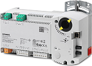
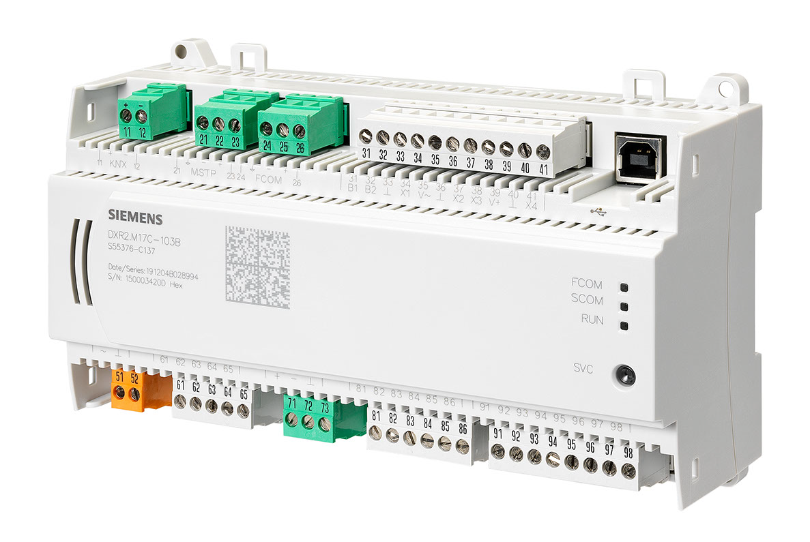

DXP2 and DXR2 MS/TP product description
DXP2.. 和 DXR2.. 是紧凑型可编程房间自动化站，适用于 HVAC、照明和遮阳应用，其中 DXP2 是耐高温自动化站。
每个 DXP2.. 和 DXR2.. 房间自动化站都有固定的 I/O 组合和预加载的应用程序类型。预加载应用程序类型的分类取决于房间自动化站的 I/O 组合。
Product description
| DXR2.M09-1, 紧凑型房间自动化站
订单号：S55376-C116 下载数据表：CM1N9206 |

| DXR2.M09T-1, 紧凑型房间自动化站
订单号：S55376-C117 下载数据表：CM1N9206 |

| DXR2.M10-1, 紧凑型房间自动化站
订单号：S55376-C115 下载数据表：CM1N9206 |

 | DXR2.M10PL-1、驱动室自动化站
订单号： 下载数据表：A6V11259964 |
| DXR2.M11-1, 紧凑型房间自动化站
订单号： 下载数据表：CM1N9207 |

| DXR2.M12P-1, 紧凑型房间自动化站
订单号： 下载数据表：CM1N9207 |

 | DXR2.M17C-1, 紧凑型房间自动化站
订单号： 下载数据表：A6V10959860 |
| DXP2.M18-1 and DXR2.M18-1, 紧凑型房间自动化站
订单号： 下载数据表：CM1N9207 |

Additional information
板载 I/O 功能 | |
DRA 安装指南 | |
DXR2.M.. 属性 | |
子系统特定的扩展属性 |
Power supply data
DXR2. | 电源 | KNX PL-Link Power supply [mA] | 现场电源 | |
|---|---|---|---|---|
DC 24 V (W) | AC 24 V (VA) | |||
M09-1 | AC 230 V | 50 |
| 4 1) |
M09T-1 | AC 230 V | 50 |
| 4 1) |
M10-1 | AC 230 V | 50 |
| 4 1) |
M10PL-1, M10PLX-1 | AC 24 V | 50 | - | 6 |
M11-1 | AC 24 V | 50 |
| 6 |
M12P-1、M12PX-1 | AC 24 V | 50 |
| 6 |
M17C-1、M17CX-1 | AC 24 V | 50 | 2.4 | 6 |
M18-1 | AC 24 V | 50 | 2.4 | 6 |
1)最大限度。 4 A 用于双向晶闸管和现场电源的公共负载。详细信息请参见数据表。
NOTICE

内部和外部KNX电源并联运行导致设备损坏
并行运行内部和外部KNX 电源可能会导致自动化站严重损坏。
- If an external power supply is used, make sure the internal KNX power supply is turned off.
NOTICE
KNX 电源不足导致通信失败
如果使用 KNX PL-Link 和 KNX S-Mode 连接的设备的功耗超过内部或外部电源提供的功率，则 KNX 导轨的通信会失败。
- Make sure that for devices with KNX S-Mode the correct value for power consumption is set in the Hardware and network editor > Inspector window > Properties > General tab.
- Make sure the power supplied by the internal or external power supply is larger than the power consumed by the connected devices with KNX Pl-Link and KNX S-Mode.
Inputs and outputs
DXR2. | 输入 | 输出 | ||||||||
|---|---|---|---|---|---|---|---|---|---|---|
ΔP | 数字输入 | 通用输入1) | 电阻输入，垂直窗扇 | 双向晶闸管高压侧 2) | 三端双向可控硅开关元件低侧 3) | 三端双向可控硅开关输出（总计VA） | 模拟输出 (0..10 V) | 继电器（3步风扇） | 继电器（1步风扇） | |
M09-1 |
| 1 | 2 |
|
|
|
| 3 | 3 |
|
M09T-1 |
| 1 | 2 |
|
| 4 | 4 | 1 |
| 1 |
M10-1 |
| 1 | 2 |
|
| 4 | 4 |
| 3 |
|
M11-1 |
| 1 | 2 |
| 6 |
| 4 |
| 3 |
|
M10PL-1, M10PLX-1 | 1 | 1 | 2 |
| 4 |
| 48 | 1 |
|
|
M12P-1，M12PX-1 | 1 | 1 | 2 |
| 6 |
| 48 | 2 |
|
|
M17C-1、M17CX-1 |
| 3 | 4 | 2 | 4 |
| 48 | 4 |
|
|
M18-1 |
| 2 | 4 |
| 8 |
| 48 | 4 |
|
|
1)可配置：Ni Pt NTC 电阻 0..10V DI
2)最大限度。每个双向晶闸管 6 个 VA
3)最大限度。 4 A 用于双向晶闸管和现场电源的公共负载。详细信息请参见数据表。
Supported devices
以下设备类型可与 DXR2.M.. 房间自动化站组合使用：
- Temperature sensors (passive and active with AC 24 V power supply)
- AC 24 V actuators and DC 0...10 V actuators with AC 24 V power supply
- Signal inputs and relay outputs
- Devices with KNX PL-Link